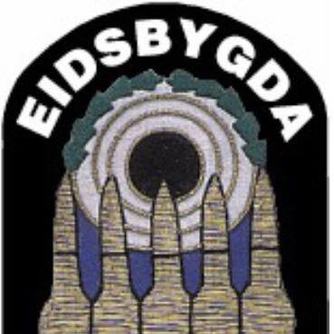
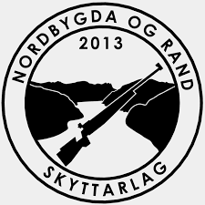

Retura-cup
2023
Oppdatert: 13.11.2022, 22:23
| Skytter | Skytterlag | Total | ") |  |  | |
|---|---|---|---|---|---|---|
| Jakob Mathias Nesheim Aardalsbakke | Eidsbygda | 50 | 15 | 15 | 8 | 12 |
| Kristine Solheim | Almenning | 35 | 5 | 10 | 10 | 10 |
| Ørjan Frøysadal Hauge | Sunnylven | 30 | 15 | 15 | ||
| Emma Årdal | Almenning | 20 | 8 | 12 | ||
| Linnea Grinde | Haugen | 20 | 12 | 8 | ||
| Angelica Årvik | Almenning | 18 | 12 | 6 | ||
| Thitiphan Ngoenaree | Almenning | 12 | 4 | 8 | ||
| Eline Totland | Bryggja | 10 | 10 | |||
| Lance Grepstad | Almenning | 6 | 6 |
| Skytter | Skytterlag | Total | | |||
|---|---|---|---|---|---|---|
| Joakim Beinnes Førde | Nordbygda og Rand | 57 | 12 | 15 | 15 | 15 |
| Oliver Flo Heggen | Eidsbygda | 42 | 8 | 10 | 12 | 12 |
| Sander Lund | Nordbygda og Rand | 38 | 10 | 12 | 10 | 6 |
| Mathias Vik Liseth | Stadlandet | 26 | 8 | 8 | 10 | |
| Petter Totland | Bryggja | 15 | 15 | |||
| Thomas Espe | Haugen | 14 | 6 | 8 | ||
| Georg Larsen | Almenning | 6 | 6 | |||
| Hans Olav Nordal | Syvde | 6 | 6 | |||
| Laurits Larsen | Almenning | 5 | 5 |
| Skytter | Skytterlag | Total | | |||
|---|---|---|---|---|---|---|
| Patrick Solheim | Almenning | 50 | 15 | 15 | 8 | 12 |
| Amanda Svoren Espe | Haugen | 30 | 15 | 15 | ||
| Emilie Espe | Haugen | 20 | 12 | 8 | ||
| Gulla Langedal Sortland | Førde | 20 | 10 | 10 | ||
| Glahn Tufteland Skrede | Eidsbygda | 12 | 6 | 6 |
| Skytter | Skytterlag | Total | | |||
|---|---|---|---|---|---|---|
| Bendik Sagebø-Kolseth | Bryggja | 30 | 15 | 15 | ||
| Isak Frøysadal Hauge | Sunnylven | 30 | 15 | 15 | ||
| Aurora Grinde | Haugen | 24 | 12 | 12 | ||
| Emilie Selstad | Almenning | 20 | 10 | 10 | ||
| Richard Solheim | Almenning | 12 | 12 | |||
| Isak Andre Berget | Dalane | 12 | 12 | |||
| Jonas Espe | Haugen | 10 | 10 |
| Skytter | Skytterlag | Total | | |||
|---|---|---|---|---|---|---|
| Anders Jarle Heggen | Eidsbygda | 57 | 15 | 15 | 12 | 15 |
| Peder Olaf Dimmen | Hjørungavåg | 22 | 10 | 12 | ||
| Morten Taraldset | Hornindal og Markane | 15 | 15 |
| Skytter | Skytterlag | Total | | |||
|---|---|---|---|---|---|---|
| Ole Kristian Aasen | Haugen | 54 | 15 | 15 | 12 | 12 |
| Svein Arne Arnesen | Hjørungavåg | 30 | 15 | 15 | ||
| Andreas Silden | Haugen | 20 | 10 | 10 |
| Skytter | Skytterlag | Total | | |||
|---|---|---|---|---|---|---|
| Leif Gunnar Ødegård | Bryggja | 42 | 15 | 15 | 12 | |
| Ove Morten Skrede | Nordbygda og Rand | 30 | 15 | 15 |
| Skytter | Skytterlag | Total | | |||
|---|---|---|---|---|---|---|
| Atle Lotsberg | Nordbygda og Rand | 57 | 15 | 15 | 15 | 12 |
| Terje Lundebrekke | Stadlandet | 20 | 10 | 10 | ||
| Per Tore Taklo | Hundeide | 18 | 12 | 6 | ||
| Jakob Lotsberg | Nordbygda og Rand | 15 | 15 | |||
| Asle Homberset | Hjartåbygda | 12 | 12 | |||
| Sander Eide Aase | Hardanger | 10 | 10 | |||
| Jan Ove Lotsberg | Nordbygda og Rand | 8 | 8 | |||
| Kristian Lotsberg | Nordbygda og Rand | 5 | 5 |
| Skytter | Skytterlag | Total | | |||
|---|---|---|---|---|---|---|
| Inge Hvitås | Kjølsdalen | 42 | 15 | 12 | 15 | |
| Ben Magne Stokland | Stadlandet | 32 | 12 | 12 | 5 | 3 |
| Monica Sæterøy Høybakk | Langevåg | 25 | 15 | 10 | ||
| Kristian Frøysadal Hauge | Sunnylven | 18 | 6 | 12 | ||
| Runar Driveklepp | Volda | 16 | 8 | 8 | ||
| Benjamin Børslid | Seim | 15 | 15 | |||
| Markus Nyhammer Haugen | Seim | 10 | 10 | |||
| Regine Nesheim | Eidsbygda | 10 | 10 | |||
| Trond Petter Lystad | Hovdebygda og Ørsta | 10 | 4 | 6 | ||
| Odd Arne Langedal | Førde | 7 | 2 | 5 | ||
| Torbjørn Høybakk | Langevåg | 4 | 4 | |||
| Roger Nesheim | Eidsbygda | 3 | 3 | |||
| Asbjørn Myklebust | Hovdebygda og Ørsta | 1 | 1 |
| Skytter | Skytterlag | Total | | |||
|---|---|---|---|---|---|---|
| Arve Halsteinslid | Haugen | 60 | 15 | 15 | 15 | 15 |
| Willy Hoddevik | Almenning | 38 | 8 | 10 | 10 | 10 |
| Arild Fure | Stryn | 36 | 12 | 12 | 12 | |
| Anker Hopland | Stadlandet | 12 | 12 | |||
| Odd Hestenes | Bryggja | 10 | 10 |
| Skytter | Skytterlag | Total | | |||
|---|---|---|---|---|---|---|
| Rolf Hatlelid | Stadlandet | 54 | 15 | 12 | 15 | 12 |
| Magne Skårbø | Stadlandet | 49 | 12 | 10 | 12 | 15 |
| Per Ulvestad | Hovdebygda og Ørsta | 20 | 10 | 10 | ||
| Ove Ekremsæter | Syvde | 15 | 15 |
| Skytter | Skytterlag | Total | | |||
|---|---|---|---|---|---|---|
| Anton Jon Aarskog | Sundnes | 45 | 15 | 15 | 12 | 3 |
| Kristen Lotsberg | Nordbygda og Rand | 41 | 6 | 12 | 15 | 8 |
| Idar Berget | Dalane | 32 | 10 | 10 | 8 | 4 |
| Karstein Velle | Fiskå | 28 | 8 | 8 | 2 | 10 |
| Erling Sylte | Fiskå | 28 | 4 | 6 | 6 | 12 |
| Svein Hoem | Stryn | 17 | 12 | 5 | ||
| Bjarne Sandvik | Knipenborg | 15 | 10 | 5 | ||
| Knut Riise | Hovdebygda og Ørsta | 15 | 15 | |||
| Magnar Molland | Hafslo | 10 | 4 | 6 | ||
| Knut Lillestøl | Hornindal og Markane | 8 | 5 | 3 | ||
| Arnold Myrvoll | Syvde | 5 | 5 | |||
| Ludvig Indrebø | Farnes | 2 | 1 | 1 | ||
| Toralf Årdal | Jølster | 2 | 2 | |||
| Odd Peter Skinlo | Hyen | 0 |